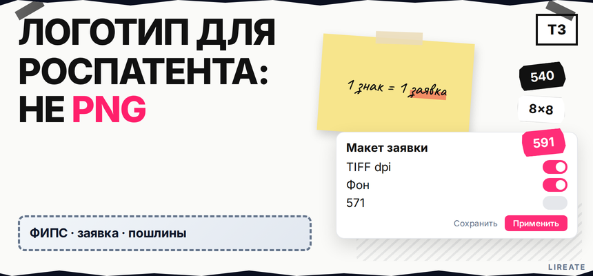
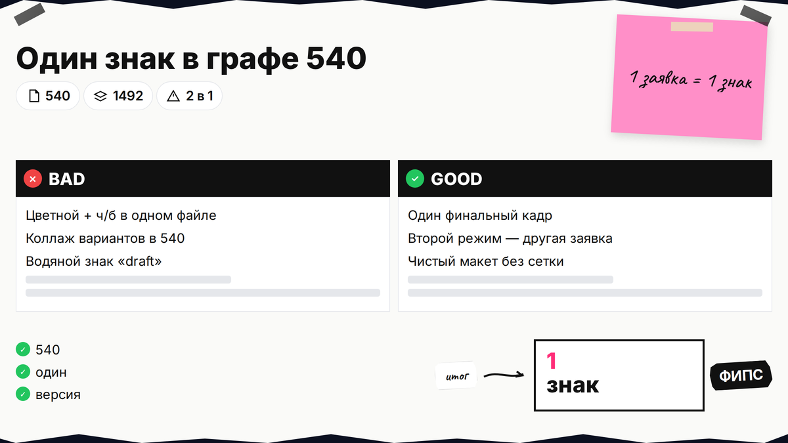
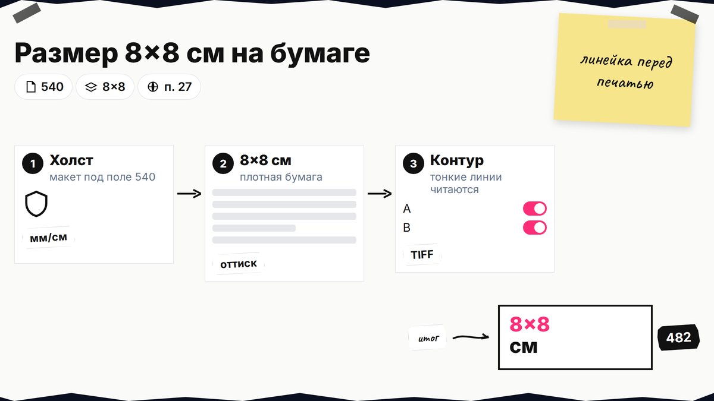
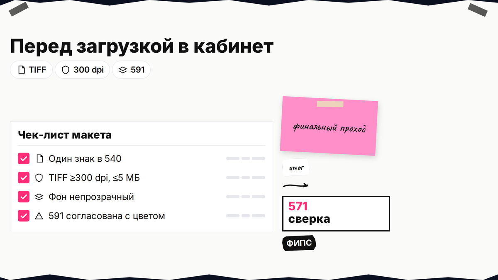

В Figma логотип чёткий, а кабинет Роспатента ругается на файл, фон или два варианта в одной заявке. Доработка логотипа под требования Роспатента - привести один макет к п. 27 Приказа № 482 и полям 540, 591, 571. На 20.11.2026; не юрконсультация. Вы зафиксируете версию, экспортируете TIFF или оттиск 8×8 и закроете чек-лист перед загрузкой. Смысл знака и отказы по ст. 1483 - в гайде L39; здесь только техника файла.

TL;DR / Быстрый инсайт: В одной заявке - один вариант знака (п. 2 ст. 1492 ГК РФ), нельзя класть цветной и ч/б макет в графу 540 вместе. Для e-заявки: TIFF без сжатия (или DOC по НПА), ≥ 300 dpi, ≤ 5 МБ, непрозрачный фон, печать 8×8 см (иногда 8×10 по ширине). Цветная регистрация - заполняете графу 591; ч/б - графу 591 не заполняете. Описание по коду 571 должно совпадать с картинкой в 540.
ФИПС - институт, куда уходит заявка на товарный знак. МКТУ - номера классов товаров и услуг. Плохой файл чаще даёт формальный запрос по графе 540, а не спор о смысле.
Соцсети терпят прозрачность и сетку макетов; в заявке нужно графическое исполнение, годное для копирования (п. 27). Размытость и артефакты JPEG - частый мотив запроса по 540 (практика ИПП).
Делайте: после утверждения дизайна пройдите этот гайд до оплаты пошлины. Не делайте: подменять технику файла правкой силуэта под ст. 1483 - для этого есть L39; риск смешения с чужими знаками - в материале про графическое сходство.

Заявка относится к одному товарному знаку. В графе 540 нельзя разместить два разных исполнения - например, цветной знак слева и ч/б справа (п. 2 ст. 1492, практика ИПП).
Делайте: дать файлу понятное имя с номером версии. Не делайте: склеивать "основной" и "упрощённый" логотип в один холст.
| Цель | Макет в 540 | Графа 591 | На что смотреть |
|---|---|---|---|
| Закрепить фирменные цвета | Цветной, точная передача | Заполнить общепринятыми названиями цветов | Охрана привязана к указанной палитре |
| Упростить тираж и печать | Контрастный ч/б | Не заполнять | В быту знак часто печатают в разных цветах - это не отменяет правил одной заявки |
| Нужны оба режима в бизнесе | Две заявки или приоритет одной версии | По каждой заявке отдельно | Не смешивать в одном изображении 540 |
Картинка подаётся в том цвете, в котором просите охрану (п. 27). В 591 пишут "тёмно-синий", "красный", а не только hex - текст должен совпадать с 540.
Делайте: сверить палитру на мониторе и в печати 8×8. Не делайте: подавать цветной файл, а в 591 указывать "чёрно-белый".

Для бумажной подачи изображение крепят в двух экземплярах на плотной бумаге размером 8×8 см (для части видов - 8×10 см по ширине) под кодом 540 (п. 27). Знак должен позволять точно идентифицировать обозначение.
Делайте: оставить по краям минимальные поля, но не "терять" тонкие линии. Не делайте: втискивать горизонтальный логотип в квадрат обрезкой охраняемого слова - лучше заранее перекомпоновать макет.
| Параметр | Требование для e-заявки (п. 27) | Типичная ошибка |
|---|---|---|
| Формат | TIF/TIFF без сжатия или DOC | PNG/JPEG "как в соцсетях" |
| Разрешение | ≥ 300 dpi | 72 dpi с веба |
| Размер файла | ≤ 5 МБ | Тяжёлый PSD внутри TIFF |
| Фон | Непрозрачный | Прозрачность под знаком |
| Масштаб при печати | 8×8 или 8×10 см | Мелкий знак в центре листа A4 |
В Figma или Illustrator: холст 8×8 см, сплошной фон, TIFF без сжатия. Пробная печать на лазерном принтере покажет размытые края до подачи.
Делайте: хранить вектор отдельно. Не делайте: растягивать маленький PNG "до 300 dpi".
Код 571 - текстовое описание вида знака и элементов (п. 29). На практике поле заполняют почти всегда, даже если дата подачи позволяет иначе (п. 8 ст. 1492).
Делайте: перечислить элементы сверху вниз: "изобразительный элемент в виде …", "словесный элемент …", шрифт без засечек, если это важно. Не делайте: писать про элементы, которых нет на картинке в 540, или называть знак "абстрактным", не описав фигуры.
Для бумаги - два одинаковых оттиска на плотной бумаге (п. 27). Актуальную форму заявки берите на сайте Роспатента, а не только из архивных правил 2003 года.
Делайте: печатать оба листа с одного PDF. Не делайте: подклеивать блестящую плёнку поверх знака.
Workflow до загрузки:
Выбор одной версии → ч/б или цвет + 591 → макет 8×8 → экспорт TIFF (≥300 dpi, ≤5 МБ, непрозрачный фон) → текст 571 → сверка с брендбуком → финальный чек-лист → поиск по реестру → подача

Делайте: сохранить скриншот заполненных полей с датой и веса файла в мегабайтах. Не делайте: менять файл в 540 после отправки без понимания процедуры исправления.
Если экспертиза просит другое изображение из-за низкого качества или несоответствия 540 и 591 - исправьте файл по этому гайду и ответьте в срок. Если мотив связан с различительностью, описательностью или сходством - это уже L39 и, при необходимости, L54, а не смена dpi.
Когда макет готов и чек-лист закрыт, можно переходить к подаче: самостоятельно в кабинете или с сопровождением - регистрация товарного знака на Лирейт без обещания положительного решения экспертизы.
После чек-листа пройдите поиск по реестру и при необходимости подключите сопровождение регистрации ТЗ на Лирейт. Идеальный TIFF не снимает риски по ст. 1483.
Материал проверен: редакция Лирейт, практика подготовки макетов к заявкам ФИПС.
Достоверность данных: Приказ № 482, ст. 1492 и кабинет ФИПС сверены на 20.11.2026
Для электронной заявки по п. 27 нужен TIF/TIFF без сжатия (или DOC) с непрозрачным фоном. PNG с прозрачностью под соцсети обычно придётся пересобрать: подложите сплошной фон и экспортируйте TIFF ≥300 dpi.
Нет. В одной графе 540 - только одно исполнение. Если нужны оба режима, планируйте две заявки или выберите приоритетную версию, не склеивая макеты в один файл.
Не менее 300 dpi и не более 5 МБ для файла изображения в e-заявке при соблюдении формата TIFF/DOC по п. 27 Приказа № 482.
Когда подаёте цветное исполнение и испрашиваете регистрацию в этом сочетании цветов. Для ч/б подачи графу 591 не заполняют.
Охрана привязана к изображению в 540. Другой логотип в рекламе может выпадать из свидетельства - это про использование знака, не про dpi файла.
Макет (эта статья) - dpi, фон, размер, 540/591/571. Доработка под экспертизу - различительность, описательность, сходство по ст. 1483 - см. отдельный гайд.
В e-заявке - один загружаемый файл, соответствующий п. 27. Для бумаги - два идентичных оттиска 8×8 см (или 8×10 по ширине) на плотной бумаге.